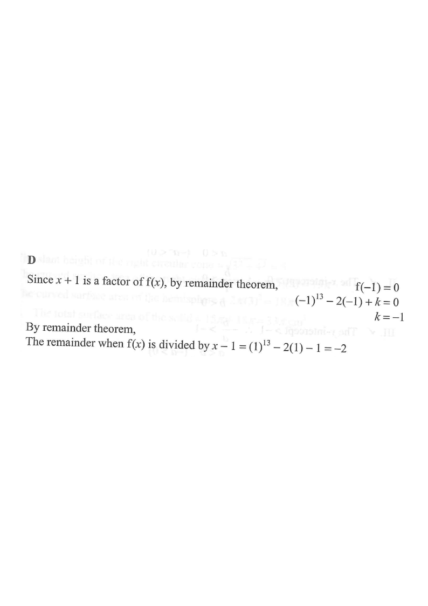

Let $f(x)=x^{13}-2x+k$, where $k$ is a constant.
If $f(x)$ is divisible by $x+1$, find the remainder when $f(x)$ is divided by $x-1$.
A. 0
B. $-1$
C. 2
D. $-2$

Figure (original exam diagram)
1Use the factor condition
Since $x+1 = x-(-1)$ is a factor of $f(x)$, the factor theorem gives
\[ f(-1)=0. \]
Hint: a factor $x-a$ means the root is $x=a$.
2Solve for the constant $k$
\[ (-1)^{13}-2(-1)+k=0 \]
\[ -1+2+k=0 \]
\[ k=-1 \]
Hint: $(-1)^{13}=-1$ because the power is odd.
3Substitute $k$ into $f(x)$
\[ f(x)=x^{13}-2x-1 \]
Hint: now every coefficient is known.
4Apply the remainder theorem
The remainder when $f(x)$ is divided by $x-1$ is
\[ f(1)=(1)^{13}-2(1)-1=1-2-1=-2. \]
Hint: divisor $x-1$ ⟹ evaluate the polynomial at $x=1$.